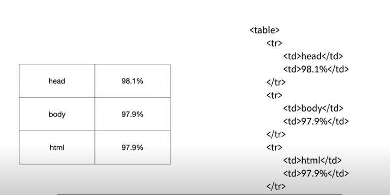

WEB 생활코딩
- html
- css
- Javascript
- 양민영
- 이서영
HTML

1.수업소개
공부와 친해지는 계기가 됐으면 좋겠다.
2.실습의 동기
약간의 정보가 있으면 개발자를 통하지 않아도 충분히 웹 구축 / 개발자와의 난해한 개념 의사소통
무료동영상들이 HD 지원 / 큰 분량
3.기획
기획 ; 만들기 전에 무엇을 만들까 구체화하는 것
예) Html, css, jbscript를 알려주는 웹사이트를 만들고 싶다.
4.코딩과 HTML
오른쪽이 사람, 원인, code, source, language/왼쪽이 기계, 결과 application, program, webpage, website
Html이 웹페이지를 만드는 언어이다.
이건 쉽고(10분만에), 중요하다. 퍼블릭 도매인//퍼너스
5. html 코딩과 실습환경 준비
웹 브라우저가 있어야함. 코드작성 프로그램:에디터 ex)ATOM, HTML Editor best HTML Editor 2022
바탕화면 web이라는 Folder(디렉토리)설정:프로젝트의 폴더
File-openfolder-web클릭 select folder//폴더를 선택함
Newfile-1.html(확장자)
다른컴퓨터는 주소검색, 근데 같은 컴퓨터 : 파일열기 ct기 알파벳 o
Ct s: 단축키 기억 안나면 file 저장하기 save
맥은 command 알파벳 s
Hello web이라고 치고 저장 실행
6. 기본문법 태그
정말 중요한 정보, 나누고 싶은 정보로 내용 채워가자..한글 아무문제 없음
불만족//중요한 정보:진하게 표시하고 싶다.
문법 tag// < strong > < /strong >: 굵은 글씨 , < u > < /u > :밑줄
앞이 열리는 태그, 뒤가 닫히는 태그
옷을 사면 태그:옷을 설명함..진하게 표현해야한다고 설명함..
7.혁명적인 변화
w3c 오른쪽 페이지 소스 누르면 html 코드를 볼 수 있다.
< h1 > 이 태그라는 것을 알 수 있다. 검색할 수 있고, 질문할 수 있다.
html h1 tag 정도로 검색
w3school 예제를 카피 에디터로
리로드해보면 추론을 통해 짐작:귀함..스스로 알아냄
< h1 > hello < /h1 >
< h2 > hello < /h2 > 제목이다. (HTML headings - heading 1~6까지 있음. 줄바꿈 기능/볼드체/숫자 커질수록 글씨 크기 작아짐)
검색엔진, 채팅 정보기술이 엄청남..축하합니다.
8.통계에 기반한 학습
150개 가량의 태그가 있다.
밑천 태그 advancedwebranking.com 여기 그래프가 있다.
몇가지 종류의 태그로 이루어져있는지 보여줌. 26-28
strong, u:잊으세요, 중요하지 않습니다. h1 태그는 노다지 8개
검색엔진 frequency of chinese words
앞에있는 것들을 응용하면 수많은 것들이 만들어질 수 있다.
무엇을 공부할까 통계를 통해
9.줄바꿈: br vs p
html new line tag < br > // < br > < br >
시각적인 의미만 가지고 있다.
단락을 구분하라고
html paragraph tag < p > 열리는 태그와 닫히는 태그가 존
< p > 태그가 정보로써 더 좋은 가치를 나타냄..이게 더 좋음
css < p style = "margin-top:40px;" >이렇게 쓸 수도 있다.
10.html이 중요한 이유
일반인과 지식인의 차이
coding 선택을 하고 글씨 크기, 진하게,
지식인:title으로 함
내부적인 차이 source, html 내부적으로 html 코드를 생성하는 것이었다.
< h3 > 로 나타나기 때문에 정보가 나타나져 있다. 꾸며져있는 것이 아니라 급이 나뉨(격)
검색엔진이 심판을 한다. 10년동안 부지런하게 글을 써 내 웹 사이트에
검색엔진은 모든 웹 페이지의 html을 구분하고 태그를 근거로 정리정돈을 함.
검색엔진은 제목이 coding인 지식인의 사이트가 먼저 올라옴..노출 다
정보를 탄 히 하는 것이 중요하다. 이미지로 글을 쓰면 검색엔진에게는 존재하지 않는 페이지가 된다.
비지니스에서 생명줄
웹은 저작권이 없는 순수한, 개방성 접근성//신체적 장애가 있는 분에게도
시각장애인 분들에게 이미지는 정보가 없는 자료이다. 누군가에게 도움이 될 수 있다.
비지니스, 휴머니즘
11.최후의 문법 속성 & img
좀 더 화려했으면 좋겠다. 사진을 넣고 싶다.
< img > 만 하면 어떤 이미지를 보여줄 지 모른다는 것 태그의 이름만으로는 정보 부족
새로운 문법이 추론된다. 이것만 알면 태그 문법 끝
source== src < img src="coding.jpg" width="450" >
unsplash.com이라는 곳 다운로드 프 그리고 프로젝트 폴더에 저 왼쪽 화면에서 오른쪽 클릭 rename
라고 입력 저장
근데 이미지가 너무 커서 width 450 정도 100%
src="coding.jpg" width="450" 요렇게 생긴 것을 속성이라고 한다. 속성 위치 상관없다.
태그와 태그 이름만으로는 부족할 때 정보,의미를 더하는 것이다.
12.부모자식과 목록
< parent >
< child > < /child >
< /parent >
서로 포함관계로 연관되어 있을 때 부모자식,, 이런 부모자식 관계가 바뀐다.
사이가 좋은 항상 서로 존재하는 태그가 있다.
목차를 완성할 것이다.
그 과정에서 부모자식 관계 태그를 살펴볼 것이다.
1.뭐라뭐라 < br >로 목차를 나둘 수 있지만
목차에 쓰라고 만든 의미에 맞는 태그가 있으니 그걸 써야한다.의미에 맞게 사용
그래야 웹페이지가 더 가치있게 된다.
목록이라는 말 list 앞에서부터 두 글까 < li >
맥은 command cr 커서가 여러 개 생긴다. 아주아주 편리한 기능이죠...?
참가자들의 목차.. 띄어쓰기 하고 싶을 근데 ul이라는 태그가 있다.
< ol >
< li >html< /li >
< li >css< /li >
< li >Javascript< /li >
< /ol >
< ol >
< li >양민영< /li >
< li >이서영< /li >
< /ol >
리로드를 해보면 아까와 결과가 같다. < br >했을 때와
어디서부터 어디까지가 연관된 건지 경계를 짓기 위한 그룹핑을 하기 위한 부모 태그가 필요한 것이다.
두 개는 반드시 서로 같이 쓰인다.
목차가 3개가 아니라 1억개면 1,2,3을 1억개 써야함. 만약 1을 지워주고 싶다고 하면 시간이 엄청 걸린다.
구월해줄 방법
ul을 < ol >로 숫자를 지우고 리워 자동으로 숫자가 넘버링
< ol >와 < ul > l은 list의 약자
ordered list 의 약자 unordered list의 약자
목록과 ol, ul 태그를 배움
테이블에 활용가능, 3대..

13.문서의 구조와 슈퍼스타들
문장을 완성하는 법을 완성함. 잘 정리정돈 구조, 체계
이번 시간에는 구조를 배워보도록 하겠다.
상당히 많은 태그 알게된 것 축하..
우리는 압도적인 슈퍼스타들에 대해 알아보겠다. 아주 중요하다.
< title > 검색엔진 기계는 책 표지로 사용. 그래서 안 쓰면 굉장히 손해
컴퓨터는 모든 정보를 0과 1로 저장함. utf-8로 저장함. 그래서 utf-8로 열어야 한다.
"웹브라우저야 이 웹 페이지를 열 때는 utf-8로 열렴"
< meta charset="utf-8" > char문자열 set 규칙
html 구조
고위직 태그들 - head, body
< body > ... < /body > : 본문 묶기 (규칙)
< head > ... < /head> : 본문을 설명하는 태그 묶기(규칙)
초고위직 태그 - html
< html > ...코드... < /html > : 전체 코드 감싸는 태그
< !doctype html > : html 형식의 문서라는 의미의 태그
14. HTML 태그의 제왕
검색엔진을 존재하게 하는 태그, 정보혁명을 일으킨 태그
html 약자: hypertext markup language
< a > : anchor. 정보의 바다에 정박한다는 의미이다. link 만들기
검색어: html specification
- w3c recommendation 페이지
사용 방법: < a href="링크 주소" > 하이퍼링크 제목 < /a >
속성 추가
- 새 탭에서 열기 : target="_blank"
- 페이지 제목 미리보기 : title = "보여주고 싶은 제목"
(사용예시)
생활코딩
의 강의를 추천한다.
15. 웹사이트 완성
링크: 연결된 웹페이지들을 엮어서 책을 만들어내는 방법과 유사하다.
형식: < a href = "제목.html" > 링크제목
16. 원시웹
internet vs web
도로 vs 차
internet 안의 web
1960년에 출발, 점점 인터넷 확산
1990년 웹 출현
스위스 제네바 물리학 연구소
1980년 팀 버너슬리
1990년 web와 internet 결합
최초웹: info.cern.ch